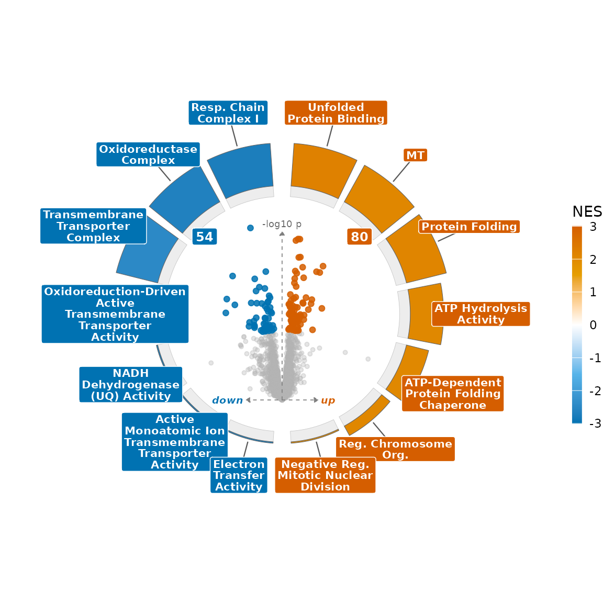
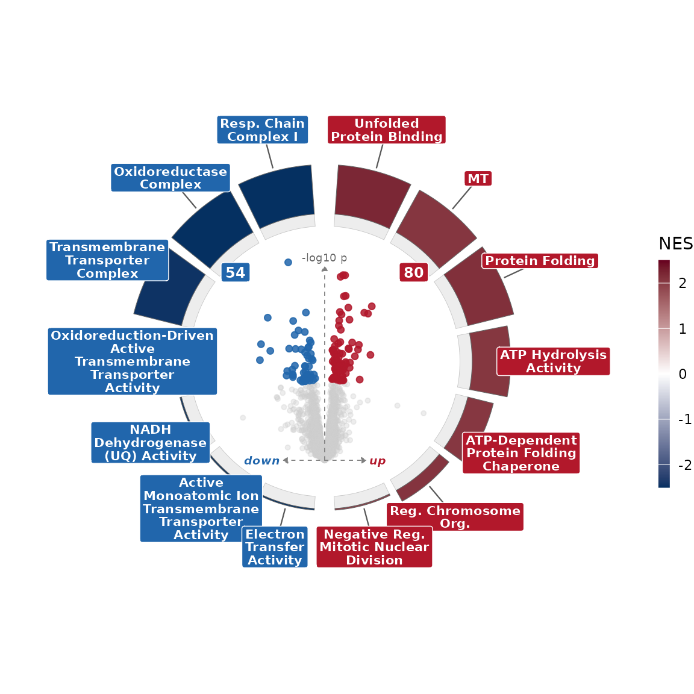
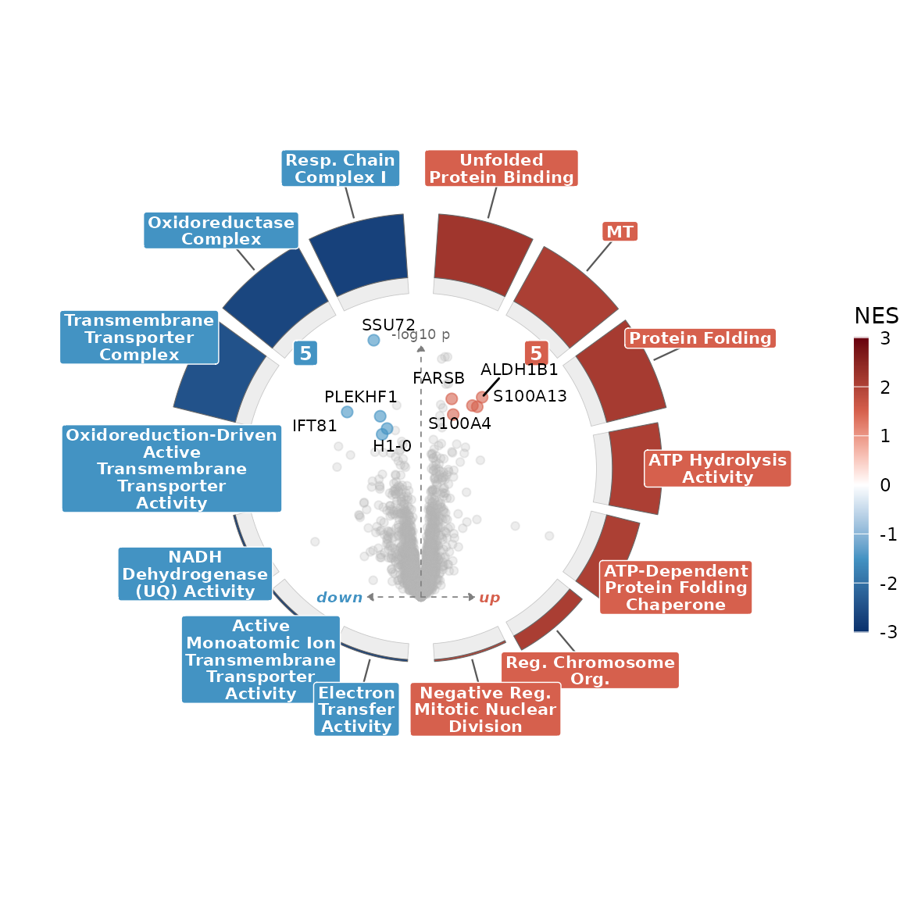
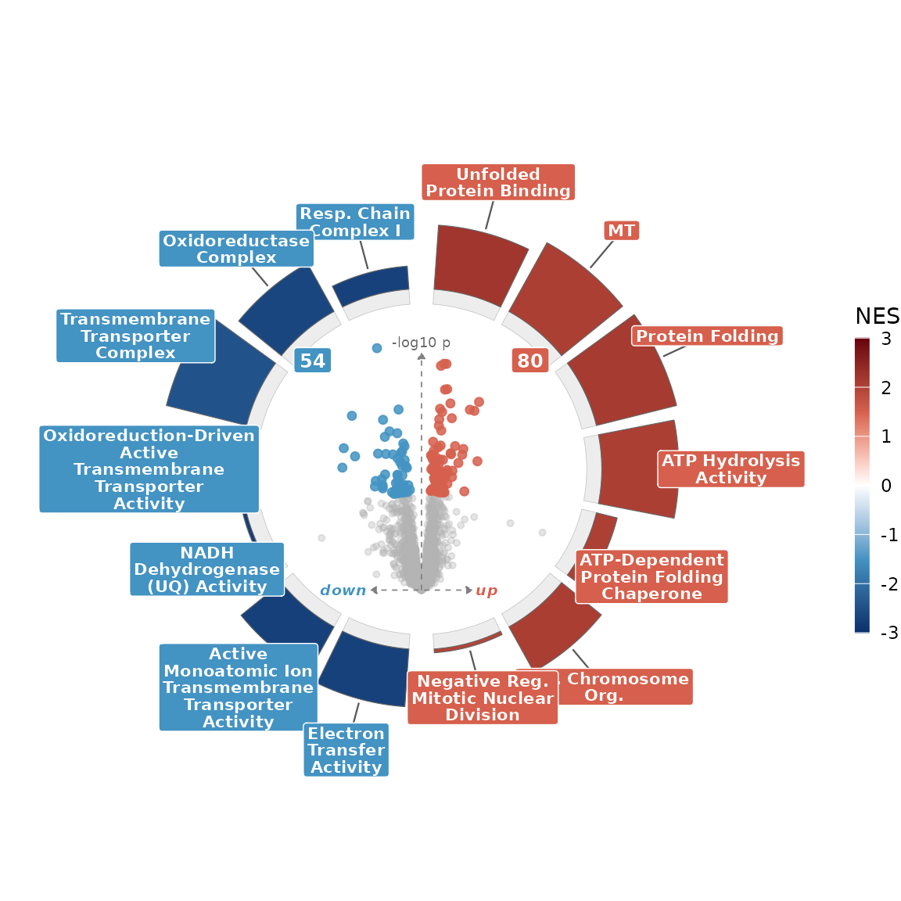
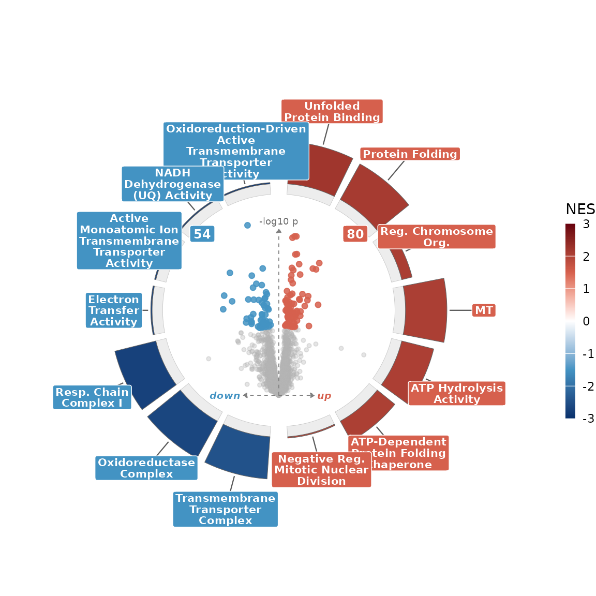
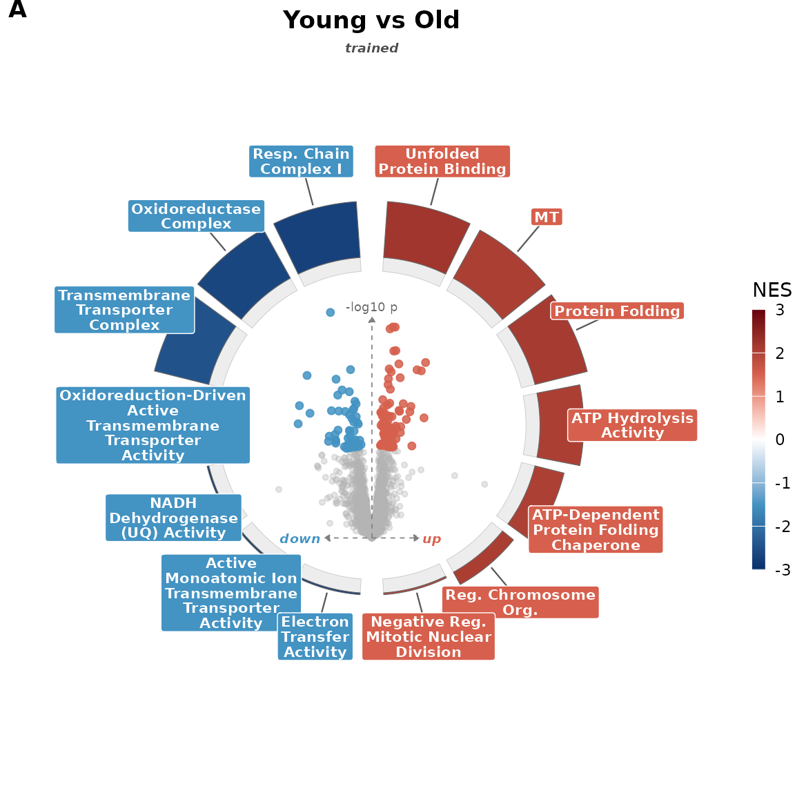
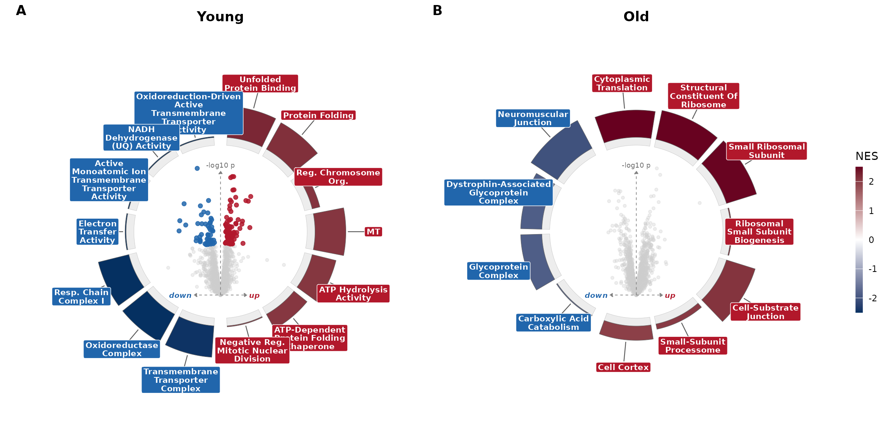

Every composite comes from one call to volcano_ring().
The defaults are chosen to read well, and you reach everything else
through two places:
-
volcano_ring_theme()controls the looks: point colours and the NES ramp. -
volcano_ring()arguments control the data mapping and layout: what counts as significant, how arcs are ordered and sized, what gets labelled.
This vignette walks the knobs section by section on the bundled YvO example.
library(enrichVolcano)
da <- read.csv(system.file("extdata", "examples", "yvo_da.csv",
package = "enrichVolcano"
))
en <- read.csv(system.file("extdata", "examples", "yvo_enrichment.csv",
package = "enrichVolcano"
))
ctr <- "Training_Young"
da1 <- da[da$contrast == ctr, , drop = FALSE]
names(da1)[names(da1) == "adj.P.Val"] <- "padj"
# The bundled table spans many databases, far more terms than read cleanly
# as a ring. Keep the significant ones and take the top 7 per direction;
# which pathways appear is always your choice.
curate <- function(contrast, n = 7) {
s <- en[en$contrast == contrast & en$padj < 0.05 & is.finite(en$NES), ]
s <- s[order(s$padj), ]
rbind(head(s[s$NES > 0, ], n), head(s[s$NES < 0, ], n))
}
en1 <- curate(ctr)The starting point, all defaults:
volcano_ring(da1, en1, title = "YvO", subtitle = ctr)
Colours
Three presets ship: "default" (red/blue diverging),
"viridis", and "okabe" (colour-blind-safe).
Swap one in through theme:
volcano_ring(da1, en1, theme = volcano_ring_theme(palette = "okabe"))
To set your own colours, pass them straight to
volcano_ring_theme(): up, down,
ns for the points, and nes_colors (with
optional nes_limits) for the arc ramp.
my_theme <- volcano_ring_theme(
up = "#B2182B", down = "#2166AC", ns = "grey80",
nes_colors = c("#053061", "white", "#67001F"),
nes_limits = c(-2.5, 2.5)
)
volcano_ring(da1, en1, theme = my_theme)
The volcano
The centre is an ordinary volcano. p_threshold and
logfc_threshold define the up/down call;
point_size and point_alpha size the cloud;
label_mode decides which proteins get text.
volcano_ring(da1, en1,
p_threshold = 0.01, logfc_threshold = log2(1.5),
point_size = 2.2, point_alpha = 0.6,
label_mode = "top_per_direction", label_n = 4
)
The ring
Arc fill is NES; arc thickness is a
magnitude you choose with magnitude, either
"neg_log_padj" (default) or "size" (the
gene-set size). arc_height_range sets how short the
smallest arc and how tall the largest arc get, so you can flatten or
exaggerate that encoding.
volcano_ring(da1, en1,
magnitude = "size",
arc_height_range = c(0.1, 2.2)
)
arc_order sets where each arc sits within its half. The
up/down split is always by NES sign; within each half you order by FDR
("padj", the default) or by enrichment strength
("nes"):
volcano_ring(da1, en1, arc_order = "nes")
Layout
The up/down badges count significant points; turn them off with
show_counts = FALSE, or nudge them with
count_x_mult / count_y_mult.
title, subtitle, and tag set the
text.
volcano_ring(da1, en1,
show_counts = FALSE,
title = "Young vs Old", subtitle = "trained", tag = "A"
)
Putting it together in a grid
volcano_ring_grid() forwards every one of these
arguments to each panel, so a styled grid is the same knobs passed
once:
da_old <- da[da$contrast == "Training_Old", ]
names(da_old)[names(da_old) == "adj.P.Val"] <- "padj"
g <- volcano_ring_grid(
list(Young = da1, Old = da_old),
list(Young = en1, Old = curate("Training_Old")),
ncol = 2,
theme = my_theme, arc_order = "nes", show_counts = FALSE
)
g$plot
For the column conventions and a limma / DESeq2 / edgeR / fgsea /
clusterProfiler / enrichR cross-walk, see
vignette("input-contract").